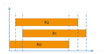
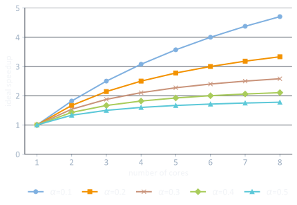
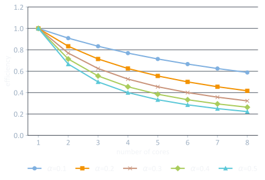
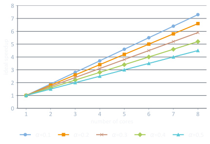
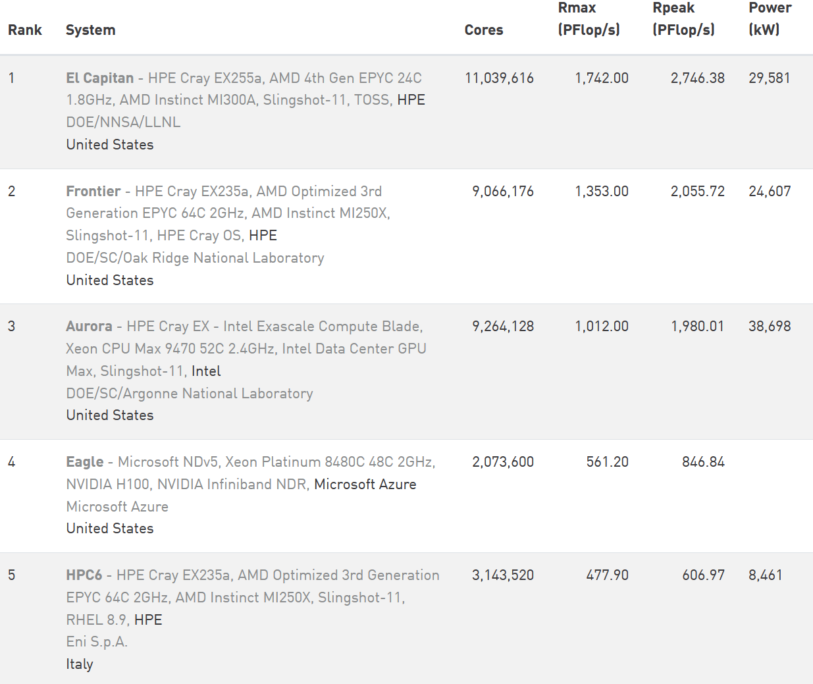
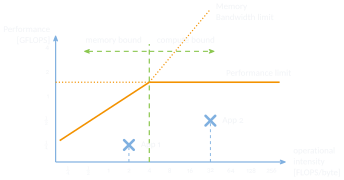
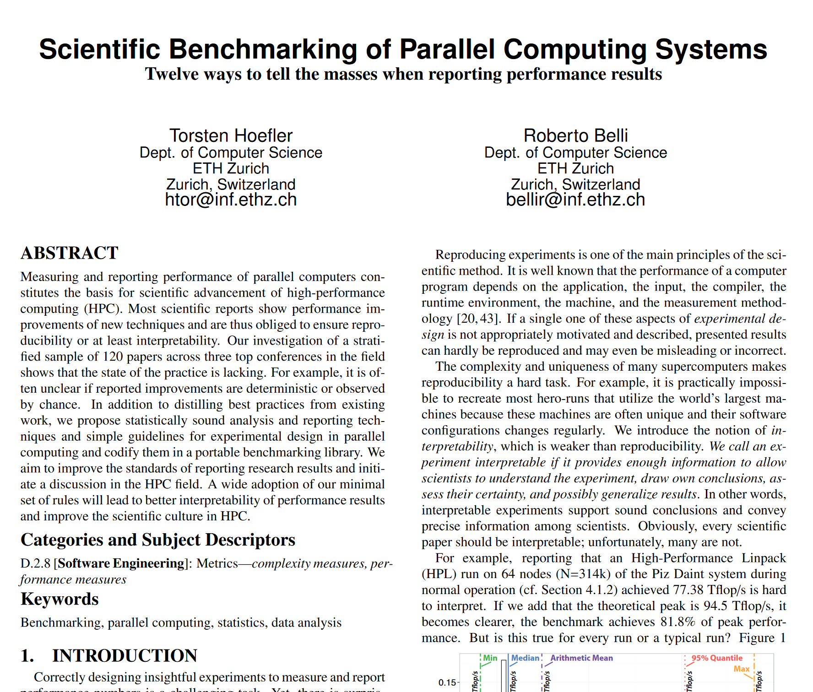
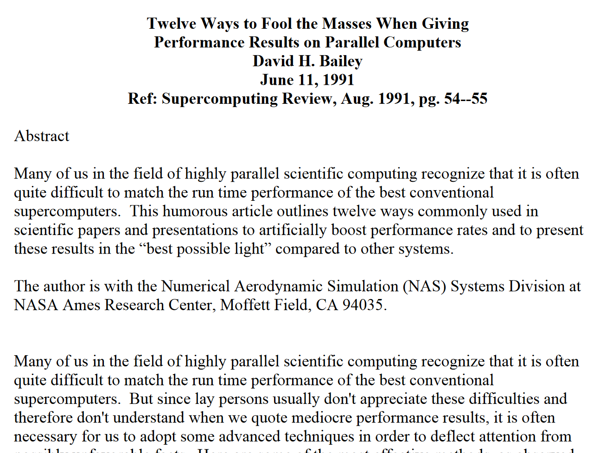

703308 VO High-Performance Computing
University of Innsbruck
\[t_\text{wall} = \max_{0 \le i < N}\left(t_{\text{end},i}\right) - \min_{0 \le i < N}\left(t_{\text{start},i}\right)\]
\[t_\text{cpu} = \sum_{i=0}^{N-1} t_i\]

rdtsc / rdtscp)MPI_WTIME_IS_GLOBAL using MPI_Comm_get_attr())\[\text{speedup}_p = \frac{t_s}{t_p}\]
ideal: \(t_p = \dfrac{t_s}{p}\) and hence \(\text{speedup}_p = \dfrac{t_s}{\;t_s/p\;} = p\) (linear)
super-linear speedup also possible
\[\text{efficiency}_p = \frac{\text{speedup}_p}{p}\]
ideal: \(\text{efficiency}_p = 1\) (= linear speedup)
worst case: \(\lim\limits_{p \to \infty} \text{efficiency}_p = 0\)
\[\text{speedup}_n = \frac{1}{r_s + \frac{r_p}{n}} = \frac{1}{\alpha + \frac{1-\alpha}{n}}\]


\[\text{speedup}_p = \alpha + (1-\alpha) \times P\]

mul, addperf, PAPI, etc.FP_ARITH_INST_RETIRED.SCALAR_DOUBLE
FP_ARITH_INST_RETIRED.SCALAR_SINGLE
FP_ARITH_INST_RETIRED.128B_PACKED_DOUBLE
FP_ARITH_INST_RETIRED.128B_PACKED_SINGLE
FP_ARITH_INST_RETIRED.256B_PACKED_DOUBLE
FP_ARITH_INST_RETIRED.256B_PACKED_SINGLE
FP_ARITH_INST_RETIRED.512B_PACKED_DOUBLE
FP_ARITH_INST_RETIRED.512B_PACKED_SINGLE
UOPS_EXECUTED.X87perf$ perf stat ./heat_stencil_1D_seq
...
28,826,239,136 cycles:u # 2.471 GHz
35,220,856,783 instructions:u # 1.22 insn per cycle
6,711,849,029 branches:u # 575.356 M/sec
1,295,209 branch-misses:u # 0.02% of all branches
1,044 LLC-load-misses:u
26 LLC-store-misses:u
15,312,122 L1-dcache-load-misses:u
476,440,489 L1-dcache-store-misses:u

One approach: use confidence interval (CI)
for normally distributed data
\[n = \left(\frac{s \times t\!\left(n-1, \frac{\alpha}{2}\right)}{e\,\bar{x}}\right)^{2}\]
for non-normally distributed data


while(!) { step2(); step3(); }703308 VO High-Performance Computing — Measuring and Reporting Performance